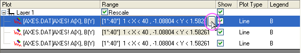

Ein Diagrammsegment mit anderem Diagrammstil hervorheben
Partial-Different-Style-Plot
Zusammenfassung
In Origin können Sie ein Segment des Diagramms mit verschiedenen Diagrammstilen markieren, z.B. kann aus einer gestrichelten Linie eine durchgezogene werden.
Origin-Version mind. erforderlich: Origin 8.0 SR6
Was Sie lernen werden
- Dialog Diagrammeinstellungen zum Erstellen eines Diagramms verwenden
- Spezielles Segment eines Diagramms besonders kennzeichnen
Schritte
- Öffnen Sie ein leeres Arbeitsblatt. Wählen Sie Hilfe: Ordner öffnen: Sample-Ordner ... im Menü, um den Ordner "Samples" zu öffnen. Öffnen Sie in diesem Ordner den Unterordner Graphing. Dort befindet sich die Datei AXES.DAT. Ziehen Sie diese Datei per Drag&Drop in das leere Arbeitsblatt, um sie zu importieren.
- Klicken Sie auf die Schaltfläche
 auf der Symbolleiste Standard, um ein neues Diagrammfenster zu erstellen, und wählen Sie dann aus dem Hauptmenü Grafik: Setup Diagramm, um den Dialog Diagrammeinstellungen aufzurufen.
auf der Symbolleiste Standard, um ein neues Diagrammfenster zu erstellen, und wählen Sie dann aus dem Hauptmenü Grafik: Setup Diagramm, um den Dialog Diagrammeinstellungen aufzurufen.
- Zeigen Sie alle drei Bedienfelder in dem Dialog Diagrammeinstellungen an. Wählen Sie das Arbeitsblatt AXES im oberen Bedienfeld. Gehen Sie dann zum mittleren Bedienfeld, um A als X und B als Y auszuwählen. Klicken Sie danach auf Hinzufügen, um dieses Diagramm zum unteren Bedienfeld hinzuzufügen. Wiederholen Sie diesen Schritt drei Mal. Drei Diagramme sollten im unteren Bedienfeld aufgeführt sein.
 |
Um alle drei Bedienfelder im Dialog Diagrammeinstellungen anzuzeigen, erweitern Sie bitte das Bedienfeld Diagrammtyp, indem Sie auf  klicken, und erweitern Sie das Bedienfeld Verfügbare Daten, indem Sie erneut auf klicken. klicken, und erweitern Sie das Bedienfeld Verfügbare Daten, indem Sie erneut auf klicken.
Bitte lesen Sie unter Mit Hilfe des Dialogs Diagrammeinstellungen zeichnen weitere Informationen zu diesem Thema.
|
- Klicken Sie dort in die Spalte Bereich, die dem ersten Diagramm entspricht. Die Schaltfläche
 sollte aktiviert sein. Klicken Sie dann auf diese Schaltfläche, um den Dialog Bereich zu öffnen.
sollte aktiviert sein. Klicken Sie dann auf diese Schaltfläche, um den Dialog Bereich zu öffnen.

- Deaktivieren Sie die Kontrollkästchen Auto (wenn sie aktiviert sind) und setzen Sie dann Von auf 1 und Bis auf 20. Klicken Sie auf OK, um den Dialog zu schließen.

- Gleichermaßen setzen Sie die Bereiche für die beiden anderen Diagramme jeweils auf "20 bis 30" und "30 bis 40".
- Klicken Sie auf OK, um das Dialogfeld Diagrammeinstellungen zu schließen. Sie sollten ein Diagramm wie folgendes erhalten:

- Klicken Sie doppelt auf die Kurve im Diagrammfenster, um das Dialogfeld Details Zeichnung zu öffnen. Wählen Sie das zweite Diagramm im linken Bereich aus. Ändern Sie im rechten Bereich den Stil auf Striche Kurz und klicken Sie dann auf die Schatfläche OK.
- Zum Schluss erhalten wir das Diagramm mit einem markierten Bereich.